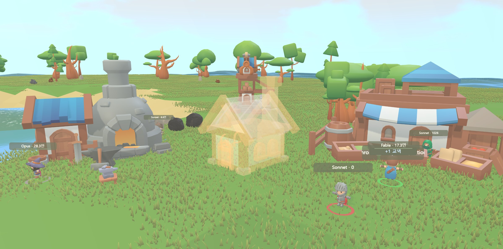

hearthling reads your local Claude Code sessions and renders them as a game village. Every session is a worker — mining, logging, trading. When an agent finishes its job, a building goes up. hearthling는 내 컴퓨터의 Claude Code 세션 기록을 읽어 게임 마을로 그립니다. 세션 하나가 워커 한 명 — 캐고, 베고, 나릅니다. 에이전트가 일을 마치면 건물이 올라갑니다.

Claude Code already writes session transcripts to your disk. hearthling just reads them. Claude Code는 이미 세션 기록을 내 디스크에 남깁니다. hearthling는 그것을 읽기만 합니다.
One Node process, zero dependencies. It tails ~/.claude session logs and serves a dashboard on localhost only. 의존성 없는 Node 프로세스 하나가 ~/.claude 세션 기록을 읽어 localhost 전용 대시보드로 제공합니다.
Live sessions and background agents appear as villagers, labeled with their model and generated tokens. Tool calls drive what they do. 라이브 세션과 백그라운드 에이전트가 마을 주민으로 나타나고, 모델명과 생성 토큰이 이름표에 붙습니다. 도구 호출이 행동을 정합니다.
Reads, greps and bash runs turn into mining, logging and hauling. When an agent completes its task, the construction site becomes a finished building. 읽기·검색·명령 실행이 채굴·벌목·운반이 됩니다. 에이전트가 작업을 마치면 공사 중이던 자리에 건물이 완성됩니다.
Running several sessions in parallel? See at a glance which one is grinding, which one is idle, and which one just finished — without cycling through terminals. 세션을 여러 개 돌릴 때, 어떤 세션이 일하는 중이고 어떤 세션이 놀고 있는지 터미널을 오가지 않고 한 화면에서 봅니다.
Daily and weekly generated-token totals per model, indexed incrementally from your transcripts. Cache reads excluded, so the number tracks real work. 모델별 일별·주별 생성 토큰 집계. 캐시 재읽기는 빼고 세므로 숫자가 실제 작업량을 따라갑니다.
Binds to 127.0.0.1. Your prompts and code never leave your machine — there is nothing to send them to. 127.0.0.1에만 열립니다. 프롬프트와 코드는 기기 밖으로 나가지 않습니다 — 보낼 곳 자체가 없습니다.
npx hearthling
or git clone https://github.com/sungeunstar/hearthling && cd hearthling && npm start
Requires Node.js 18+ and Claude Code. Opens at localhost:4577. Options: --port, --claude-home, --no-open. Node.js 18 이상과 Claude Code가 필요합니다. localhost:4577에서 열립니다. 옵션: --port, --claude-home, --no-open.
Free, MIT-licensed, and yours to fork. 무료, MIT 라이선스, 마음껏 포크하세요.